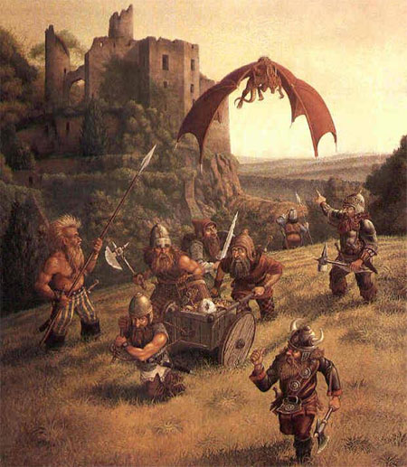
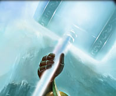

1° LIVELLO DI POTERE
| Bless | Summoning |
| Sphere : | All |
| Range : | 0 |
| Components : | V, S, M |
| Duration : | 6 rounds |
| Casting Time : | 1 round |
| Area of Effect : | Speciale |
| Saving Throw : | None |
Attraverso questa magia il chierico invoca la benedizione della propria divinità su di sé e suoi compagni. Oltre ad avere, in ogni caso, effetti sul chierico, la magia influenzerà una creatura supplementare per ogni livello di lancio della stessa (fino ad un massimo di 10 creature supplementari al 10° livello di lancio) che si trovino ad una distanza massima di 30 metri dal chierico al momento del lancio dell'incantesimo. Chi si trova sotto gli effetti di questo incantesimo riceve un bonus di +1 a tutti i tiri per colpire ed un bonus di +1 a tutti i tiri salvezza contro paura. Si noti che questi bonus, come del resto ogni altro bonus di origine divina, non si cumulano con bonus, sempre di origine divina, che incidano sul medesimo tiro od effetto (si pensi ad es. ai medesimi bonus concessi dagli incantesimi Aid, Chant e Prayer). Il componente materiale di questo incantesimo è una boccetta d'acqua santa che si consuma al momento del lancio.
| Call Upon Faith | Summoning |
| Sphere : | Summoning |
| Range : | 0 |
| Components : | V, S, M |
| Duration : | Speciale |
| Casting Time : | 1 |
| Area of Effect : | The Caster |
| Saving Throw : | None |
Prima di iniziare una qualsiasi difficile azione il chierico può invocare l'aiuto della propria divinità. In questo modo il chierico otterrà un beneficio corrispondente ad un bonus +3 (+15%) che potrà applicare ad un singolo tiro necessario ad effettuare il compimento dell'azione. Questo beneficio può essere utilizzato solo per il compimento di un'azione che inizi e si concluda nel round immediatamente successivo a quello del lancio della presente magia. Si noti che questo incantesimo non può essere utilizzato nel caso in cui il chierico desideri effettuare un'azione consistente nell'invocare un intervento divino. Il componente materiale di questo incantesimo è il simbolo sacro del chierico.
| Combine | Summoning |
| Sphere : | All |
| Range : | Tocco |
| Components : | V, S |
| Duration : | Speciale |
| Casting Time : | 1 round |
| Area of Effect : | Speciale |
| Saving Throw : | None |
Questo incantesimo cumulativo può essere utilizzato da due a quattro chierici. La magia, per precisione, viene utilizzata sempre sul chierico del livello di esperienza più lato (in caso di chierici di pari livello su uno a loro scelta) da quelli di livello più basso. Costoro lanciano la magia toccando il chierico che deve ottenere gli effetti benefici. Quest'ultimo quindi potrà considerarsi, fino a che perdura questa magia, di un livello di esperienza superiore per ogni chierico che ha utilizzato su di lui questo incantesimo al solo fine di effettuare un'azione di scacciare o controllare i non morti e di determinare il livello di lancio dei propri incantesimi. Si noti che, nonostante il chierico possa lanciare magie ad un livello di lancio superiore, questo incantesimo non permette al chierico di accedere a magie diverse da quelle alle quali aveva regolarmente accesso né di ottenere punti preghiera supplementari. Per funzionare la magia richiede che il chierico beneficiario non si sposti dalla posizione occupata al momento del suo lancio nonché il mantenimento della concentrazione da parte dei chierici che l'hanno lanciata i quali, se attaccati durante il mantenimento della concentrazione, saranno considerati (sempre che non decidano di interromperla) come se fossero storditi [stunned]. Se, per qualsiasi motivo, viene meno la concentrazione del chierico che ha lanciato questo incantesimo od il suo contatto fisico con il beneficiario (ad es. il chierico che ha lanciato la magia si sposta o cade al suolo knockdown) la magia terminerà immediatamente solo in relazione al chierico che ha interrotto la concentrazione. Se, invece, è il chierico che beneficia di questa magia a spostarsi dalla posizione originariamente occupata (od a cadere al suolo knockdown) costui farà venir meno tutte le magie di combine che gli erano state lanciate. Si noti, infine, che se è solo il chierico beneficiario a perdere la concentrazione nel lancio delle sue magie ciò non influenzerà gli incantesimi di combine che gli erano stati lanciati addosso.
| Detect Magic | Divination |
| Sphere : | Divination |
| Range : | 0 |
| Components : | V, S, M |
| Duration : | 1 round |
| Casting Time : | 1 round |
| Area of Effect : | The Caster |
| Saving Throw : | None |
Quando il chierico lancia questo incantesimo riesce a percepire la luminosità delle aure magiche presenti entro 30 metri di distanza dallo stesso. Per poter percepire la luminosità dell'aura, però, il chierico deve poter vedere, anche se parzialmente, l'oggetto o la zona in cui l'aura è in effetto. Un chierico non potrà vedere, ad es. l'aura di un oggetto magico che si trova all'interno di uno zaino o sepolto da macerie. In base all'intensità dell'aura, inoltre, il chierico potrà determinare la potenza dell'incantamento. Se si tratta di effetti magici dovuti ad incantesimi, quindi, il chierico potrà determinare il livello di potere della magia di cui analizza gli effetti. Se, invece, si tratta di oggetti magici costui potrà determinarne la potenza dell'incantamento come indicata nella seguente scala:
|
POTENZA DELL'INCANTAMENTO |
PUNTI ESPERIENZA |
| Least Minor Enchantment | 75 punti esperienza |
| Lesser Minor Enchantment | 100 punti esperienza |
| Minor Enchantment | 150 punti esperienza |
| Superior Minor Enchantment | 250 punti esperienza |
| Greater Minor Enchantment | 375 punti esperienza |
| Lesser Enchantment | 500 punti esperienza |
| Superior Enchantment | 1000 punti esperienza |
| Greater Enchantment | 1500 punti esperienza |
Il componente materiale di questo incantesimo è il simbolo sacro del chierico.
| Endure Cold and Heat | Abjuration |
| Sphere : | Protection |
| Range : | Tocco |
| Components : | V, S, M |
| Duration : | 24 ore |
| Casting Time : | 1 round |
| Area of Effect : | Una creatura |
| Saving Throw : | None |
Questo incantesimo protegge la creatura che lo riceve dal calore e dal freddo. In particolare, per un'intera giornata, chi riceve questo incantesimo non patirà gli effetti di temperature molto basse o molto alte resistendo da -20° a 50° centigradi anche indossando dei comuni vestiti. Qualora il personaggio si trovi esposto a temperature che superano le soglie di resistenza la magia terminerà immediatamente. Qualora, inoltre, il personaggio subisce una qualsiasi forma di danno (sia di origine magica che naturale) da freddo, fuoco o calore la magia terminerà immediatamente ma il primo danno di questo tipo subito sarà ridotto di 2 punti danno + 1 punto danno per livello di lancio della magia (fino ad un massimo di 10 punti danno all'8° livello di esperienza). Questa magia, infine, terminerà immediatamente qualora chi l'ha ricevuta si sottopone agli effetti di una qualsiasi altra protezione magica al freddo, al fuoco od al calore. Il componente materiale di questo incantesimo è il simbolo sacro del chierico.
| Magical Stone | Enchatment |
| Sphere : | Combat |
| Range : | Tocco |
| Components : | V, S, M |
| Duration : | Speciale |
| Casting Time : | 4 |
| Area of Effect : | da 1 a 3 ciottoli |
| Saving Throw : | None |
Utilizzando questo incantesimo il chierico può incantare fino a tre ciottoli non più grandi di quelli utilizzabili come proiettili comuni di una fionda. Una volta incantati i ciottoli potranno essere scagliati a mano fino a 30 metri di distanza. I ciottoli potranno essere scagliati anche tutti nel medesimo round (il primo ad un fattore iniziativa pari a +3, gli altri a fine round come attacchi multipli non simultanei). Per colpire il bersaglio sarà necessario effettuare un normale tiro per colpire (modificato dalla destrezza) anche se l'incantamento divino presente sui ciottoli farà automaticamente considerare abile nel loro uso chi si appresta a lanciarli. I ciottoli, inoltre, saranno considerati come armi magiche con incantamento +1 al solo fine di determinare se siano in grado di danneggiare creature immuni alle armi normali. Ogni ciottolo che va a segno provocherà 1d4 danni da impatto, 2d4 danni da impatto contro i non morti e le creature demoniache. Una volta lanciati i ciottoli si sgretoleranno in polvere definitivamente. I ciottoli possono anche essere lanciati come proiettili di una fionda ma in tal caso saranno utilizzate le normali regole di attacco (tranne che per l'incantamento e per i danni subiti dal bersaglio una volta colpito). Se i ciottoli non sono utilizzati immediatamente la magia perdurerà sugli stessi per 30 rounds al termine dei quali i ciottoli si sgretoleranno comunque in polvere come se fossero stati lanciati. Il componente materiale di questo incantesimo è il simbolo sacro del chierico e fino a tre ciottoli di fiume dalla forma assai levigata dal valore di 1 monete d'oro (per tutti e tre i ciottoli) e dal peso di 1/2 libbra l'uno.
| Protection from Chaos | Abjuration |
| Sphere : | Law |
| Range : | Tocco |
| Components : | V, S, M |
| Duration : | 3 round per livello |
| Casting Time : | 4 |
| Area of Effect : | Una Creatura |
| Saving Throw : | None |
Questo incantesimo
protegge la creatura che lo riceve in tre diverse modalità:
1) Tutte le creature di indole caotica (allineamento chaotic) che attaccano chi
è protetto da questo incantesimo ricevono -2 ai loro tiri per colpire. Inoltre,
qualora creature della medesima indole impongano in via diretta (ad esempio
attraverso un incantesimo od un'abilità speciale) a chi è protetto da questa
magia il superamento di un qualsiasi tiro salvezza quest'ultimo riceverà un
bonus di +2 al tiro per superarlo. I medesimi benefici si applicano nei
confronti delle creature che, sebbene non siano di indole caotica, si trovano
sotto gli effetti di una qualsiasi forma di confusione magica.
2) La protezione magica previene il contatto fisico tra il corpo di chi riceve
questo incantesimo ed il corpo di qualsiasi creatura di indole caotica che sia
di origine extraplanare (si pensi ad esempio ad un elementale od ad un essere
demoniaco) nonché con quello di creature, sempre di indole caotica, "richiamate"
nel Primo Piano Materiale tramite magie della scuola Summoning od effetti magici
e rituali ad esse equivalenti. Si noti che la protezione magica previene solo il
contatto fisico diretto tra i due corpi impedendo ad esempio l'utilizzo di
attacchi fisici naturali o di poteri attivabili a tocco. Non saranno, invece,
impediti attacchi che avvengono attraverso l'uso di armi nonché ogni forma di
attacco o di utilizzo di potere a distanza. Se chi è protetto da questa magia,
però, effettuerà una qualsiasi forma di attacco nei confronti di una creatura
che era impossibilitata a toccarlo questa seconda forma di protezione sarà
immediatamente interrotta esclusivamente nei confronti della specifica creatura
attaccata.
3) La protezione magica dona a chi la riceve una possibilità di resistere al
magico (magic resistance) pari al 10% + 5% per livello di lancio nei confronti
di qualsiasi incantesimo clericale della sfera Chaos. Si noti che questa
resistenza al magico non può essere in alcun caso annullata dal beneficiario per
l'intera durata dell'incantesimo.
Il componente materiale di questo incantesimo è un anello d'oro forgiato da un
fabbro di indole legale dal valore minimo di 12 g.p. e dal peso di 1/10 di
libbra che si consuma al lancio dell'incantesimo.
| Purify Food and Drink | Alteration |
| Sphere : | All |
| Range : | 30 metri |
| Components : | V, S |
| Duration : | Istantanea |
| Casting Time : | 1 round |
| Area of Effect : | Speciale |
| Saving Throw : | None |
Attraverso questo incantesimo il chierico è in grado di purificare bevande o cibo che era stato in qualsiasi modo contaminato (ad esempio avvelenato od in stato di putrefazione). Si noti che questa magia funziona solo sul cibo per cui può essere utilizzata sulla carne solo dopo che la stessa sia stata macellata non potendo la magia essere lanciata direttamente su un cadavere. Stesso discorso vale per le bevande che devono essere state imbottigliate (non potendosi ad es. lanciarsi la magia su un pozzo) e sui frutti e le verdure che devono essere stati in precedenza raccolti (non potendo la magia essere lanciata direttamente sulla pianta). Il cibo o le bevande così purificate saranno buone da mangiare e da bere (ovviamente qualora fosse necessario cuocerle sarà comunque ancora necessario farlo). La magia non previene il naturale decadimento dei prodotti successivamente al suo lancio od, in ogni caso, una eventuale nuova contaminazione degli stessi. Per ogni livello di lancio dell'incantesimo il chierico può purificare un ammontare di cibo e bevande sufficienti a sfamare e dissetare una creatura di taglia media per un intero giorno. Questo incantesimo non ha alcun effetto su cibi o bevande magiche (si pensi ad una pozione) od in altro modo incantati (si pensi ad una razione che è stata oggetto di una maledizione).
| Remove Fear | Charm |
| Sphere : | Charm |
| Range : | 12 metri |
| Components : | V, S |
| Duration : | Speciale |
| Casting Time : | 1 |
| Area of Effect : | 1 creatura + 1/4 Livelli |
| Saving Throw : | Speciale |
Con questo incantesimo il chierico infonde nell'animo di chi lo riceve grande coraggio donandogli, quindi, un bonus di +4 a tutti i tiri salvezza contro ogni forma di paura (fear) per 1 turno. Se, invece, chi riceve questo incantesimo, avendo già fallito uno o più tiri salvezza contro una qualsiasi forma di paura, si trova sotto gli effetti di questa, costui avrà diritto a ripetere i tiri salvezza falliti con l'applicazione di un bonus di+2 al tiro. In tale ultimo caso, però, la magia terminerà immediatamente dopo che il soggetto ha ripetuto i suddetti tiri salvezza. L'incantesimo avrà effetto su una creatura più una creatura ogni quatto livelli di lancio oltre il primo (1 creatura dal 1° al 4° livello, 2 creature dal 5° all'8° livello, e così via).
| Sanctuary | Abjuration |
| Sphere : | Protection |
| Range : | Tocco |
| Components : | V, S, M |
| Duration : | 2 rounds + 1 round/livello |
| Casting Time : | 4 |
| Area of Effect : | Una creatura |
| Saving Throw : | Speciale |
Quando il chierico lancia questa magia la creatura che la riceve viene protetta dalla divinità agli occhi dei propri nemici. Tutte le creature ostili alla creatura protetta presenti al momento del lancio o che la incontrino nel corso della durata della magia devono effettuare un tiro salvezza contro incantesimi. Se il tiro salvezza è fallito costoro perderanno la consapevolezza della presenza della creatura protetta agendo come se la stessa non fosse presente per tutta la durata dell'incantesimo. Se, però, la creatura protetta effettuerà una qualsiasi azione possa essere considerata, anche in senso lato, offensiva (sia direttamente che indirettamente) nei confronti di una qualsiasi creatura (non solo quindi nei confronti di chi ha fallito il tiro salvezza) la magia terminerà alla fine del round in cui il soggetto ha posto in essere tale azione (ad esempio riattivare una trappola precedentemente disattivata sarà considerata un'azione di tipo offensivo). Si noti che il lancio di incantesimi di mero potenziamento, di protezione o di cura effettuati sulla propria persona non saranno in alcun caso ritenute azioni di tipo offensivo, laddove, invece, se tali incantesimi siano lanciati su una diversa creatura questi potranno assumere (ad insindacabile giudizio del Dungeon Master) i connotati di un'azione di tipo offensivo. Il componente materiale di questo incantesimo è il simbolo sacro del chierico ed un piccolo specchio d'argento dal peso di 1/2 libbra e dal costo di 15 g.p. che si consuma al momento del lancio.
2° LIVELLO DI POTERE
| Aid | Summoning |
| Sphere : | Combat |
| Range : | Tocco |
| Components : | V, S, M |
| Duration : | 1 round + 1round/livello |
| Casting Time : | 5 |
| Area of Effect : | Una Creatura |
| Saving Throw : | None |
Chi riceve questo incantesimo viene benedetto ed aiutato dalla divinità ottenendo per tutta la sua durata un bonus di +1 al tiro per colpire e di +1 a tutti i tiri salvezza. Si noti che questi bonus, come del resto ogni altro bonus di origine divina, non si cumulano con bonus, sempre di origine divina, che incidano sul medesimo tiro od effetto (si pensi ad es. al bonus al tiro per colpire od ai tiri salvezza contro paura donato dall'incantesimo di primo livello di potere Bless o da quelli similari donati dalle magie Chant e Prayer). Oltre a tali bonus il soggetto che riceve questo incantesimo vedrà aumentati temporaneamente i propri punti ferita di 1d8. Tali punti ferita supplementari non possono essere recuperati in alcun modo (ad es. tramite cure magiche) e saranno i primi ad essere eliminati in caso di danni (la creatura protetta quindi perderà questi punti supplementari prima di perdere i propri punti ferita) ed in ogni caso questi svaniranno al termine della durata dell'incantesimo. Il componente materiale di questo incantesimo è il simbolo sacro del chierico ed una striscia di veste bianca cosparsa di resina dal valore di 2 monete d'oro e dal peso di 0.2 libbre che si consuma al momento del lancio dell'incantesimo.
| Resist Acid & Corrosion | Abjuration |
| Sphere : | Protection |
| Range : | Tocco |
| Components : | V, S, M |
| Duration : | 1 round per livello |
| Casting Time : | 5 |
| Area of Effect : | Una creatura |
| Saving Throw : | None |
Questo incantesimo protegge la creatura che lo riceve dall'acido, dalle sostanze caustiche e da ogni altra sostanza corrosiva. Per tutta la durata dell'incantesimo la creatura protetta subirà solo la metà (calcolata per difetto) di tutti i danni da acido subiti. Inoltre, qualora la stessa debba superare un qualsiasi tiro salvezza per ridurre il danno subito dall'acido costei riceverà un bonus di +2 al tiro. Il componente materiale di questo incantesimo è il simbolo sacro del chierico ed una dose di olio d'oliva che si consuma al momento del lancio. Un dispensatore d'olio con 10 dosi ha un valore di 3 monete d'oro ed un peso pari ad 1 libbra.
| Resist Cold | Abjuration |
| Sphere : | Protection |
| Range : | Tocco |
| Components : | V, S, M |
| Duration : | 1 round per livello |
| Casting Time : | 5 |
| Area of Effect : | Una creatura |
| Saving Throw : | None |
Questo incantesimo protegge la creatura che lo riceve dal freddo sia di origine magica che naturale. Per tutta la durata dell'incantesimo la creatura protetta subirà solo la metà (calcolata per difetto) di tutti i danni da freddo. Inoltre, qualora la stessa debba superare un qualsiasi tiro salvezza per ridurre il danno subito dal freddo costei riceverà un bonus di +2 al tiro. Il componente materiale di questo incantesimo è il simbolo sacro del chierico ed un piccolo pezzo di carbone dal peso di 0.2 libbre e dal costo di 0.1 monete d'oro che si consuma al lancio dell'incantesimo.
| Resist Fire | Abjuration |
| Sphere : | Protection |
| Range : | Tocco |
| Components : | V, S, M |
| Duration : | 1 round per livello |
| Casting Time : | 5 |
| Area of Effect : | Una creatura |
| Saving Throw : | None |
Questo incantesimo protegge la creatura che lo riceve dal fuoco e dal calore sia di origine magica che naturale. Per tutta la durata dell'incantesimo la creatura protetta subirà solo la metà (calcolata per difetto) di tutti i danni da fuoco o calore. Inoltre, qualora la stessa deve superare un qualsiasi tiro salvezza per ridurre il danno subito dal fuoco o dal calore costei riceverà un bonus di +2 al tiro. Il componente materiale di questo incantesimo è il simbolo sacro del chierico ed una dose di mercurio che si consuma al momento del lancio Un dispensatore di mercurio con 10 dosi ha un valore di 50 monete d'oro ed un peso pari a 1/2 libbra. .
| Restore Strenght | Necromantic |
| Sphere : | Necromantic |
| Range : | Tocco |
| Components : | V, S |
| Duration : | Istantanea |
| Casting Time : | 5 |
| Area of Effect : | Una Creatura |
| Saving Throw : | None |
Questo incantesimo permette di contrastare stati di debolezza, affaticamento nonché di recuperare punti di forza persi temporaneamente a causa di qualsiasi effetto magico o potere naturale di una creatura. La magia, ad esempio, è in grado di contrastare il tocco di un mostro appartenente alla categoria Shadow nonché di magie come Chill Touch e Ray of Fatigue. Si noti, però, che questa magia non è in grado di eliminare gli effetti dell'affaticamento naturalmente accumulato dal soggetto per l'attività fisica sostenuta né di fare recuperare punti di forza persi (anche se per effetto di magia o di poteri naturali di creature) permanentemente. Purché i punti siano recuperabili, infatti, è necessario che la loro perdita sia di per sé temporanea. Ciò si verifica solo quando è previsto dalla stessa magia subita (o dal potere naturale della creatura) che il soggetto recuperi i punti automaticamente dopo che sia trascorso un certo lasso temporale, senza che sia richiesta un'attività di guarigione, rigenerazione od un qualsiasi altro tipo di intervento per la rimozione della penalità.
| Sanctify | Summoning |
| Sphere : | All |
| Range : | Tocco |
| Components : | V, S, M |
| Duration : | 24 ore |
| Casting Time : | 1 turno |
| Area of Effect : | Speciale |
| Saving Throw : | None |
Questo incantesimo permette al chierico di creare una zona sacra. In particolare l'area d'effetto di questa magia può essere la superficie di un edificio o di un qualsiasi terreno che abbia un'area non superiore a 20 metri quadrati per livello di lancio della magia. Dopo il lancio di questo incantesimo l'area viene pervasa dal potere divino. Per tale motivo, tutti coloro sono fedeli della medesima divinità ottengono un bonus di +2 a tutti i tiri salvezza finché restano all'interno dell'area santificata, tutti coloro sono fedeli di una divinità dello stesso gruppo, ad es. Fratellanza della Luce, riceveranno un bonus di +1 ai tiri salvezza, stesso bonus sarà ricevuto da chi non è fedele di alcuna divinità ma possiede il medesimo allineamento della divinità del chierico che ha lanciato la magia. Creature non fedeli a nessuna divinità con allineamento diverso ed, in ogni caso, fedeli di divinità appartenenti ad un diverso gruppo non riceveranno alcun beneficio. Tutte le creature (indipendentemente dalla loro fede) che si trovano nella zona consacrata e sono intenzionate ad attaccare, od in qualsiasi modo danneggiare, il chierico, i suoi fedeli, ed in generale il culto della divinità che ha consacrato il suolo riceveranno una penalità di -1 a tutti i tiri salvezza fino a che resteranno nell'area consacrata. Oltre a tale beneficio, qualsiasi tentativo di scacciare i non morti presenti all'interno dell'area otterrà un bonus di +2 al potenziale di scaccio, ciò indipendentemente dalla divinità adorata dal chierico che esegue lo scaccio. Il componente materiale di questo incantesimo è il simbolo sacro del chierico e rari incensi per un valore pari a 3 g.p. ogni 20 metri quadrati consacrati che si consumano al lancio della magia.
| Spiritual Hammer | Conjuration |
| Sphere : | Combat |
| Range : | 0 |
| Components : | V, S, M |
| Duration : | 3 rounds + 1 round/livello |
| Casting Time : | 1 round |
| Area of Effect : | The Caster |
| Saving Throw : | None |
|
 |
In ogni round successivo al lancio di questo incantesimo e per tutta la sua durata il chierico potrà in luogo di una qualsiasi altra azione complessa far materializzare nelle proprie mani un martello spirituale. Quando ciò avviene un martello immateriale di chiara fattura nanica, composto di pura energia divina dal colore bianco traslucido, appare nella mano del chierico. Il chierico può quindi lanciare nel medesimo round (e con la medesima azione) il martello come se si trattasse di un'arma da lancio contro qualsiasi creatura si trovi entro 30 metri di distanza. Il fattore iniziativa di tale attacco è pari a +4. Il martello, dunque, volerà verso la vittima designata ed il chierico dovrà effettuare un regolare tiro per colpire (modificato dalla destrezza). Se la vittima è colpita la stessa subirà 1d6 danni + il bonus ai danni posseduto dal chierico per il proprio punteggio di forza. Fermo restando il fattore iniziativa di +4, il martello si considererà un'arma magica +1 (donando relativo bonus al tiro per colpire ed ai danni) se la magia è lanciata dal 1° al 5° livello di lancio; il martello si considererà un'arma magica +2 (donando relativo bonus al tiro per colpire ed ai danni) se la magia è lanciata dal 6° al 9° livello di lancio; il martello si considererà un'arma magica +3 (donando relativo bonus al tiro per colpire ed ai danni) se la magia è stata lanciata oltre il 9° livello di lancio. Una volta lanciato il martello svanirà potendo, però, apparire nuovamente in qualsiasi altro round di durata della magia nelle mani del chierico che effettui l'azione di attacco con lo stesso. Il componente materiale di questo incantesimo è un piccolo martello da guerra d'argento in miniatura dal costo di 10 monete d'oro e dal peso di 1/2 libbra che si consuma al lancio dell'incantesimo. |
3° LIVELLO DI POTERE
| Accellerate Healing | Alteration |
| Sphere : | Time |
| Range : | Tocco |
| Components : | V, S |
| Duration : | 10 giorni |
| Casting Time : | 1 turno |
| Area of Effect : | Una creatura |
| Saving Throw : | None |
Attraverso l'uso
di questa magia il chierico incrementa la guarigione naturale delle ferite della
creatura che la riceve. In particolare la magia agisce sul recupero dei punti
ferita che avviene quando una creatura si riposa. Si noti, quindi, che i punti
ferita curati non saranno in alcun caso considerati cure magiche in quanto la
magia implementa le cure naturali che chi la riceve avrebbe comunque ricevuto
attraverso il tempo ed il riposo. In particolare, la magia raddoppia i punti
ferita che normalmente la creatura avrebbe recuperato risposando. Qualora il
personaggio che si trova sotto gli effetti di questo incantesimo non riposi la
magia non svolgerà, quantomeno per il corso di quella giornata, alcun effetto
benefico sullo stesso. Nella normalità dei casi i punti ferita persi si
recuperano solo con il riposo. Il riposo può essere comune o totale.
Affinché una creatura si consideri in condizioni di riposo comune occorre che la
stessa rispetti per 24 ore le seguenti condizioni:
* Non effettui alcuna azione stancante (ossia un'azione
che preveda l'accumulo di almeno un punto fatica).
* Non soffra per il digiuno o la disidratazione.
* Non effettui il lancio di alcun incantesimo, né utilizzi alcun potere speciale
od oggetto magico per l'attivazione dei quali (nonostante non sia richiesta la
concentrazione) il personaggio deve pronunciare parole od effettuare movimenti
assimilabili ai componenti verbali e somatici degli incantesimi.
* Non utilizzi alcuna competenza non relativa alle armi.
* Dorma per almeno 8 ore consecutive nell'arco delle 24 ore.
* Non si trovi esposto a condizioni ambientali avverse (restare sotto la pioggia
o all'agghiaccio, ad esempio, non consente un adeguato riposo).
* Trascorra tale periodo in posizione relativamente comodità, senza effettuare
attività complesse che richiedono sforzo od attenzione particolare per essere
compiute. In particolare, potranno ritenersi compatibili con una situazione di
riposo regolare le seguenti attività: camminare tranquillamente lungo un
sentiero, cavalcare in pianura o lungo una strada battuta, effettuare
comodamente un turno di guardia. Non saranno considerate, invece, compatibili
con una situazione di riposo regolare le seguenti attività: camminare senza
seguire comodamente un sentiero, cavalcare in zone impervie (foreste, colline,
montagne) e/o fuori da strade battute, effettuare una qualsiasi attività
lavorativa, effettuare una qualsiasi attività di studio o di ricerca.
Ogni 24 ore
trascorse in condizioni di riposo comune, quindi, una creatura recupera
normalmente 1 punto ferita perso (si noti che le creature mostruose recuperano
attraverso il riposo comune 1 punto ferita supplementare per ogni due dadi vita
posseduti arrotondati per difetto). In una situazione di riposo comune, dunque,
chi si trova sotto gli effetti di questa magia recupererà 2 punti ferita ogni 24
ore.
Affinché una creatura si consideri in condizioni di riposo totale (solo le
creature con intelligenza almeno pari a Low [5] possono decidere di effettuare
riposo totale), oltre a rispettare le suddette regole per il riposo comune,
occorre che la stessa trascorra 24 rispettando le seguenti ulteriori condizioni:
* Non effettui
alcun tipo di attività se non quella di dedicarsi completamente al riposo.
* Disponga di cibo e bevande tali che da poter essere considerato ben nutrito ed
idratato.
* Disponga di un comodo giaciglio o, comunque, di una posizione sulla quale
adagiarsi che possa considerarsi per la creatura una postazione comoda (si pensi
ad un comodo letto per un umano od un semi-umano).
* Possa riposare in un luogo chiuso e ben riscaldato, dove vi sia una
temperatura costante ed adeguata (per tale motivo si consideri nella normalità
dei casi un personaggio che si riposi senza il riparo almeno di una tenda, senza
il calore di un fuoco e senza la comodità di un sacco a pelo, non potrà
effettuare riposo totale ma solo riposo comune).
Ogni creatura che si trova in una posizione di riposo totale recupera 1 punto
ferita supplementare in più rispetto a quanti ne avrebbe ottenuti in 24 di
riposo comune. In una situazione di riposo totale, dunque, chi si trova sotto
gli effetti di questa magia recupererà 4 punti ferita ogni 24 ore.
Si noti che questo incantesimo raddoppia unicamente i punti ferita recuperati attraverso il riposo non eventuali punti ferita supplementari ottenuti con altri metodi non magici (si pensi all'utilizzo di unguenti erboristici oppure alle cure mediche).
| Dispel Magic | Abjuration |
| Sphere : | All |
| Range : | 60 metri |
| Components : | V, S |
| Duration : | Istantanea |
| Casting Time : | 6 |
| Area of Effect : | Sfera di 3 metri di diametro |
| Saving Throw : | None |
Quando il chierico
lancia questa magia ha una certa possibilità di dissipare l'energia magica
presente nell'area d'effetto. In particolare, all'uso di questa magia, potranno
verificarsi una serie di effetti (si noti che la magia proverà automaticamente a
dissipare tutta la magia presente nell'area senza che il chierico possa operare
alcuna forma di selezione o distinzione).
In primo luogo il chierico ha una certa possibilità di dissolvere effetti magici
presenti nell'area d'effetto, nonché quelli attivi sulle creature o sugli
oggetti presenti nella medesima area. Tali effetti magici possono essere
scaturiti dal lancio di incantesimi, dall'uso di poteri magici innati oppure
dall'utilizzo di oggetti magici. Orbene, per determinare se il chierico è
riuscito a dissipare questa forma di magia presente nell'area lo stesso dovrà
effettuare un tiro con 1d20 (si noti che se il chierico vuole dissipare effetti
magici di incantesimi lanciati da se stesso questo tiro si considererà
automaticamente avvenuto con successo senza che lo stesso debba effettuarlo, ciò
non vale però per effetti magici che il chierico ha attivato in altro modo come
ad esempio attraverso l'uso di oggetti magici). La possibilità base di dissipare
la magia sarà pari ad un tiro di 11 o più (corrispondente quindi al 50% di
possibilità).Occorrerà, quindi, confrontare il livello di lancio di questa magia
con quello dell'effetto magico presente nell'area. Per ogni livello di
differenza il chierico riceverà un bonus/malus di +1 al tiro. Se ad esempio un
chierico lancia una magia di dispel magic al 5° livello di lancio in un'area
dove è presente una creatura che è sotto l'effetto di una magia di invisibilità
lanciata al 3° livello il chierico usufruirà di un bonus di +2, dissipando,
quindi, l'invisibilità con un tiro pari a 9 o più. Si tenga presente che un tiro
pari a 20 si considera in ogni caso successo automatico laddove un tiro pari ad
1 sarà comunque un insuccesso. Se il tiro ha successo l'effetto magico sarà
stato definitivamente dissipato. Si noti che il livello di lancio degli effetti
magici varia a seconda della fonte di tale effetto e può essere determinato
consultando la seguente tabella:
| FONTE DELL'EFFETTO MAGICO | LIVELLO DI LANCIO |
| Incantesimo di mago o chierico | Livello di lancio della magia |
| Potere magico innato | Livello specificato oppure dadi vita della creatura |
| Minor Enchantment | 5° livello di lancio |
| Bacchetta Magica | 6° livello di lancio |
| Staffa | 8° livello di lancio |
| Pozione | 12° livello di lancio |
| Altri oggetti magici | 12° livello di lancio |
| Artefatti | Normalmente resistono alla magia dispel magic |
In secondo luogo questo incantesimo può dissipare la magia con la quale sono stati incantati gli oggetti magici presenti nell'area d'effetto (ciò, quindi, indipendentemente dall'uso che ne era stato fatto). Per ogni oggetto magico presente occorrerà effettuare un tiro con 1d20. La possibilità base di dissipare la magia sarà sempre pari ad un tiro di 11 o più (corrispondente quindi al 50% di possibilità).Occorrerà, quindi, confrontare il livello di lancio di questa magia con il livello corrispondente all'incantamento che è stato infuso nell'oggetto magico. Per ogni livello di differenza, quindi, il chierico riceverà un bonus/malus di +1 al tiro. Se, quindi, il tiro ha successo l'oggetto magico sarà disattivato 1d3+1 rounds (nei quali va calcolato il round in cui si è verificato il dispel magic) ed i suoi poteri non potranno essere utilizzati. Per fare alcuni esempi una pergamena magica letta non sortirà alcun effetto (né potranno consumarsi le magie presenti o verificarne la corretta scrittura) ed un'arma magica +2 si considererà per tale periodo una comune arma non dando più benefici e non permettendo di colpire le creature immuni alle armi normali. Si tenga presente che un tiro pari a 20 si considera in ogni caso successo automatico laddove un tiro pari ad 1 sarà comunque un insuccesso. Infine occorre notare che a differenza di ogni altro oggetto magico qualora l'incantamento di un liquido magico (come una pozione) sia dissolto con successo questi perderà definitivamente ed irrimediabilmente ogni potere magico. Per determinare il livello di lancio corrispondente agli incantamenti presenti sui vari oggetti si consulti la seguente tabella:
|
POTENZA DELL'INCANTAMENTO |
PUNTI ESPERIENZA |
LIVELLO CORRISPONDENTE |
| Least Minor Enchantment | 75 punti esperienza | 5° livello di lancio |
| Lesser Minor Enchantment | 100 punti esperienza | 6° livello di lancio |
| Minor Enchantment | 150 punti esperienza | 7° livello di lancio |
| Superior Minor Enchantment | 250 punti esperienza | 8° livello di lancio |
| Greater Minor Enchantment | 375 punti esperienza | 9° livello di lancio |
| Lesser Enchantment | 500 punti esperienza | 11° livello di lancio |
| Superior Enchantment | 1000 punti esperienza | 13° livello di lancio |
| Greater Enchantment | 1500 punti esperienza | 15° livello di lancio |
| Oggetti di potenza superiore | per ogni 500 punti esperienza | +1 livello di lancio oltre al 15° |
| Pozioni Magiche | Irrilevante | 12° livello di lancio |
| Pergamene Magiche | Irrilevante | 10° livello di lancio |
| Artefatti | Irrilevante | Impossibile dissolverne il potere |
Infine occorre osservare che questa magia ha effetto solo sugli effetti magici
già presenti nell'area d'effetto al momento del lancio non influenzando quindi
l'utilizzo di oggetti magici ed il lancio di incantesimo che avvengono nel
medesimo round di combattimento ma ad un fattore di iniziativa successivo a
quello del dispel magic.
| Efficacious Monster Ward | Abjuration |
| Sphere : | Wards |
| Range : | 30 metri |
| Components : | V, S, M |
| Duration : | 1 round/livello |
| Casting Time : | 3 |
| Area of Effect : | Una sfera di 3 metri di diametro/livello |
| Saving Throw : | Negates |
Attraverso l'uso di questa magia il chierico crea una zona protetta che può impedire alle creature fino a 2 dadi vita/livelli di entrare. Queste creature hanno diritto ad un tiro salvezza contro incantesimi per evitare gli effetti della magia. Se il tiro salvezza riesce costoro potranno entrare ed uscire a piacimento dall'area protetta senza alcuna limitazione, altrimenti saranno impossibilitate ad entrare per tutta la durata dell'incantesimo. L'area protetta dall'incantesimo corrisponde ad un numero di sfere (esagoni) di 3 metri di diametro corrispondenti al livello di lancio della magia. Il chierico può disporre queste aree a piacimento purché siano disposte senza soluzione di continuità tra di loro e siano tutte allo stesso livello di altezza dal suolo (non potendosi disporre una sull'altra. Le creature che si trovano già all'interno dell'area protetta al momento del lancio dell'incantesimo potranno restarci ma qualora escano dalla stessa dovranno regolarmente effettuare il tiro salvezza per poterci rientrare durante l'efficacia della magia. In ogni caso, il chierico può, in ogni caso, determinare al momento del lancio dell'incantesimo (e solo in quel momento) quali creature siano libere di entrare ed uscire dall'area per tutta la durata della magia. E' necessario, però, che tali creature (le quali non dovranno effettuare alcun tiro salvezza) si trovino alla vista del chierico al momento del lancio della magia. L'area protetta non impedisce, in alcun caso, alle creature che non riescono ad entrarci di utilizzare armi da lancio, armi da tiro, incantesimi od altri attacchi a distanza nei confronti delle creature che si trovano all'interno dell'area.
Deve ora essere
regolamentata la situazione che può verificarsi su una mappa esagonale in
corrispondenza dei bordi dell'area protetta. Il seguente esempio, cui si
riferisce la mappa sopra inserita, può chiarire le dinamiche dell'incantesimo.
Una magia lanciata al 5° livello di lancio ha efficacia in un'area di cinque
esagoni di tre metri. Orbene si consideri ad esempio la condizione di una
creatura che si trova all'interno dell'area protetta ma in un esagono adiacente
a quello occupato da due creature nemiche che si trovano all'esterno dell'area.
In particolare, in una posizione adiacente ad una creatura che avendo fallito il
tiro salvezza è impossibilitata ad entrare nell'area d'effetto nonché in una
posizione adiacente ad una seconda creatura che, invece, può entrare
liberamente. Orbene, in queste condizioni sarà colui che si trova all'interno
dell'area protetta a poter scegliere, all'inizio di ogni round di combattimento
fra due diverse soluzioni. La scelta va comunicata prima della richiesta delle
intenzioni e non richiede un'azione di movimento vera e propria ma solo un
piccolo spostamento che si considera una free action istantanea; tale
spostamento, però, non può essere effettuato qualora il personaggio, per
qualsiasi motivo è impossibilitato a spostarsi. Una volta effettuata la scelta,
la stessa resterà inalterata per tutta la durata del round a meno che il
personaggio non effettui uno spostamento in un altro esagono. In tale ultimo
caso, se si tratta di un altro esagono che si trova all'interno dell'area
protetta, lo stesso potrà determinare appena entrato che posizione occupare in
tale esagono per il resto del round in corso. Le due scelte tra le quali il
personaggio può optare sono:
1) Posizionarsi ai margini dell'esagono occupato.
Se il personaggio effettua questa scelta, costui potrà attaccare ed essere
attaccato in corpo a corpo da qualsiasi creatura si trovi in una posizione
adiacente alla propria (ciò indipendentemente da dove si trovino gli esagoni
adiacenti occupati). Quindi anche da quelle creature che sono impossibilitate ad
entrare nella zona occupata dal personaggio. Il personaggio, quindi, si
considererà regolarmente in corpo a corpo con tutte le creature adiacenti alla
propria posizione.
2) Restare nella zona più interna dell'esagono occupato.
Se il personaggio effettua questa scelta, invece, lo stesso potrà essere
attaccato in corpo a corpo solo dalle creature che, nonostante occupino una
posizione adiacente alla propria, siano libere di entrare nell'area protetta.
Saranno queste creature a poter scegliere di avvicinarsi al personaggio in modo
tale da poterlo attaccare ed essere, a loro volta, attaccate in corpo a corpo da
costui. Quindi, il personaggio sarà considerato, nel round in corso, in corpo a
corpo solo con le creature che, potendolo fare, decidano di avvicinarlo
nell'area protetta.
Si noti, infine, che, qualora una creatura si sposti durante un round di
combattimento, gli esagoni di transizione in cui questa passa e che si trovano
all'interno dell'area protetta si considereranno attraversati sempre restando
nella zona più interna (per tale motivo, quindi, potranno effettuare attacchi di
opportunità in corpo a corpo contro la creatura solo coloro siano liberi di
entrare all'interno dell'area protetta).
Il componente materiale di questa magia è il simbolo sacro del chierico ed una
manciata di sale che si consuma al momento del lancio della magia
| Meld into Stone | Abjuration |
| Sphere : | Elemental Earth |
| Range : | Tocco |
| Components : | V, S, M |
| Duration : | 5 rounds + 1d10 rounds |
| Casting Time : | 6 |
| Area of Effect : | Speciale |
| Saving Throw : | None |
Attraverso l'uso di questa magia il chierico letteralmente si fonde inserendosi, con tutti gli oggetti dallo stesso trasportati, all'interno di un muro di roccia od um altro blocco di pietra. La magia può essere lanciata su un qualsiasi blocco di pietra sia alto, largo e profondo almeno 2 metri. Il blocco di pietra, inoltre deve essere appoggiato al suolo e sporgere dallo stesso. Per tale motivo la magia può essere utilizzata su un muro di roccia o su un macigno ma non su un pavimento od un soffitto anche qualora gli stessi siano di roccia. La magia non funzionerà qualora il chierico trasporti più di 100 libbre di oggetti inanimati od oggetti la cui lunghezza superi due metri. Quando il chierico entra nella roccia lo stesso occupa la posizione più superficiale della stessa rispetto alla zona in cui è entrato, restando in contatto con la superficie esterna della pietra in cui si è inserito. Una volta nella pietra il chierico non potrà spostarsi, parlare, né effettuare alcuna altra azione fisica. Non avrà necessità di respirare e non vedrà nulla né sentirà ciò che accade fuori dalla roccia. Sarà, però, cosciente e consapevole della sua posizione e del trascorrere del tempo. Alla fine di ogni round di durata della magia il chierico potrà decidere di uscire dalla roccia occupando (alla fine del round in cui ha effettuato la scelta) la medesima posizione dallo stesso occupata prima di entrare nella roccia. Qualora tale posizione risulti occupata il chierico si troverà nella più vicina casella libera eventualmente selezionata a caso fra quelle equidistanti. Se allo scadere della durata della magia (il cui tiro deve essere effettuato segretamente) il chierico non è ancora uscito dalla roccia costui verrà espulso violentemente dalla stessa (occupando una posizione come in caso di uscita volontaria) subendo 3d6 danni da schiacciamento (botta). Si consideri che la superficie di roccia in cui il chierico si è inserito abbia una classe armatura pari a 2 ed 80 punti struttura. Attacchi minori alla roccia in cui il chierico si è inserito, che siano cioè solo in grado di scalfirla o graffiarla non produrranno alcun effetto sul chierico. Attacchi in grado di effettuare danni strutturali, invece, qualora riducano i punti struttura della roccia a zero avranno la conseguenza di espellere il chierico dalla stessa. In tal caso il chierico deve superare un tiro salvezza contro raggio della morte. Se il tiro salvezza fallisce il chierico sarà morto a causa dello schiacciamento, altrimenti lo stesso subirà 4d8 danni da schiacciamento (botta). Si noti che il chierico è consapevole dello stato in cui si trova la roccia in cui si è inserito. Alcuni incantesimi hanno effetti particolari sul chierico se lanciati sulla roccia in cui lo stesso si è inserito: una magia Transmute Rock to Mud espellerà il chierico alla fine del round in corso e lo stesso dovrà superare un tiro salvezza contro incantesimi per non morire; una magia Stone to Flash lo espellerà alla fine del round in corso provocandogli 4d8 danni da schiacciamento (botta), una magia Passwall lo espellerà alla fine del round in corso senza che lo stesso subisca alcun danno. Il componente materiale di questo incantesimo è il simbolo sacro del chierico.
| Remove Curse | Anjuration |
| Sphere : | All |
| Range : | Tocco |
| Components : | V, S |
| Duration : | Istantanea |
| Casting Time : | 6 |
| Area of Effect : | Una creatura |
| Saving Throw : | Speciale |
Attraverso l'uso di questo incantesimo il chierico prova a rimuovere da una creatura una maledizione. Si noti che la magia funziona sulla creatura non sull'oggetto fonte della maledizione. Se utilizzata, ad esempio, su una creatura che ha subito una maledizione presente su un oggetto la stessa sarà liberata dalla maledizione ma l'oggetto potrà comunque colpire con la propria maledizione un'altra creatura (o anche la medesima se si sottopone nuovamente ai suoi effetti). Alcune maledizioni non possono essere rimosse dall'uso di questo incantesimo e certe altre richiedono che questa magia sia lanciata ad un determinato livello di potere per rimuoverle come previsto nella descrizione della maledizione. Questa magia lanciata al 12° livello di lancio può anche provare a rimuovere la licantropia da una creatura infetta (mai però da un vero licantropo). Per poter funzionare l'incantesimo deve essere lanciato quando il licantropo è sotto gli effetti della licantropia e si trova, quindi, in forma trasformata (1/2 bestia o totalmente bestia). Il licantropo, dunque, riceve un tiro salvezza contro incantesimi per evitare gli effetti della magia. Se il tiro salvezza è fallito costui sarà totalmente guarito altrimenti la licantropia avrà resistito e lo stesso chierico non potrà provare a rimuoverla nuovamente prima del superamento di un nuovo livello di esperienza.
| Repair Injury | Necromancy |
| Sphere : | Healing |
| Range : | Tocco |
| Components : | V, S |
| Duration : | Istantanea |
| Casting Time : | 1 turno |
| Area of Effect : | Una creatura |
| Saving Throw : | None |
Questo incantesimo curativo ha due effetti che si verificano indipendentemente l'uno dall'altro. L'effetto principale di questa magia si verifica quando la stessa è lanciata su una creatura che ha subito una ferita critica. La magia dovrà essere direzionata su una determinata ferita critica subita. Le ferite critiche delle categorie Contusione, Lacerazione, Penetrazione, Lesione, Frattura, Taglio profondo, Perforazione e Rottura saranno totalmente guarite e rimosse. Le ferite critiche delle categorie Frantumato, Spappolato, Squartato e Trapassato saranno ridotte alla categoria Rottura e considerate come tali. Le ferite critiche delle categorie Amputazione e Perdita non saranno curate da questa magia. Si noti che una sola magia di Repair Injury può essere lanciata su ogni singola ferita critica subita. In luogo di essere direzionata su una ferita critica, la magia può essere direzionata su un'emorragia subita dalla vittima considerandosi in tal caso, al solo fine di interrompere la fuoriuscita di sangue, come una magia di Cure Serious Wounds. Oltre a tali effetti, la magia cura 1d10+1 punti ferita persi dalla vittima; ciò indipendentemente dal fatto che la stessa abbia subito o meno una ferita critica od un'emorragia. Si noti, però, che questo secondo effetto di cura magica non può, in alcun caso, essere direzionato su una ferita critica né su un'emorragia per permetterne la guarigione ma lo stesso può permettere unicamente al beneficiario di recuperare punti ferita persi in modo comune. Come ogni comune cura magica, inoltre, questo secondo effetto permette a chi lo riceve di uscire dal coma ma non può curare ferite prodotte da acido od altre ferite che richiedano una qualsiasi forma di rigenerazione per essere guarite.
4° LIVELLO DI POTERE
| Dimensional Anchor | Alteration |
| Sphere : | Guardian |
| Range : | 3 metro per livello |
| Components : | V, S |
| Duration : | 1 turno + 1 round per livello |
| Casting Time : | 1 |
| Area of Effect : | Una creatura |
| Saving Throw : | Negates |
Quando il chierico lancia questo incantesimo su una creatura la stessa ha diritto a superare un tiro salvezza su magia per evitarne gli effetti. Se il tiro è fallito, due sottili catene spirituali di colore bianco si attorciglieranno al corpo della vittima la quale sarà letteralmente ancorata al piano dimensionale in cui si trova per tutta la durata dell'incantesimo. Per tale motivo, qualsiasi forma di movimento dimensionale di qualsiasi fonte esso sia sarà impedito alla creatura. Per fare un elenco esemplificativo degli effetti magici bloccati da questo incantesimo possono indicarsi le seguenti magie: Teleport, Blink, Dimensional Door, Dimensional Folder, Gate, Phasing, Etherealness, Plane Shift, Maze e Shadow Walk. Si noti che la magia non ha alcun altro effetto se non quello di bloccare gli spostamenti extradimensionali della vittima.
| Spell Immunity | Abjuration |
| Sphere : | Protection |
| Range : | 0 |
| Components : | V, S, M |
| Duration : | 30 round |
| Casting Time : | 4 |
| Area of Effect : | The Caster |
| Saving Throw : | None |
Il chierico che lancia questo incantesimo protegge sé stesso da alcuni tipi di incantesimi degli utenti di magia e dei sacerdoti. Il chierico, in particolare, sarà protetto dagli incantesimi di primo, secondo e terzo livello di potere. Deve osservarsi che il chierico può proteggere la sua persona solo da incantesimi che possano avere come bersaglio diretto la creatura (si pensi ad una magia di Magic Missile), da incantesimi ad area che possano colpire la creatura qualora la stessa si trovi nell'area d'effetto (si pensi ad una magia di Fireball) o da incantesimi che incantando un oggetto possano avere effetti diretti sulla creatura protetta (si pensi ad una magia di Minor Planar Fire Weapon). La magia non potrà proteggere, infatti, da incantesimi che svolgano effetti solo indiretti sulla creatura (si pensi ad esempio a tutte le magie di richiamo della scuola Summoning, alle magie protettive come Protection from Evil, alle magie di potenziamento come Enlarge, Strenght che siano attive su un'altra creatura, alle barriere magiche ed alle magie difensive come Armor ed Energy Shield of Damage Absorbtion). Questa magia protegge anche dagli oggetti magici e dai poteri magici naturali che riproducono esattamente i medesimi effetti degli incantesimi su menzionati. Orbene, qualora nel corso della durata di questo incantesimo il chierico sarà sottoposto agli effetti di un incantesimo dal quale questa magia protegge lo stesso potrà effettuare un vero e proprio tiro di resistenza magica contro lo stesso. Il chierico ha un punteggio di resistenza magica pari a 50% per gli incantesimi di primo livello di potere, 40% per gli incantesimi di secondo livello di potere e 30% per gli incantesimi di terzo livello di potere. A tale percentuale base il chierico potrà aggiungere un bonus del 2% per ogni livello di lancio di questo incantesimo superiore al 7° fino ad un massimo di +10% al 12° livello di lancio. Il componente materiale di questo incantesimo è il simbolo sacro del chierico.
| Unfailing Endurance | Necromancy |
| Sphere : | Necromantic |
| Range : | Tocco |
| Components : | V, S |
| Duration : | 1 giorno/livello |
| Casting Time : | 1 round |
| Area of Effect : | Una creatura/2 livelli |
| Saving Throw : | None |
Questo incantesimo rinforza il fisico delle creature che lo ricevono rendendole particolarmente resistenti all'affaticamento ed allo sforzo fisico. Per tale motivo, per tutta la durata dell'incantesimo, chi ne riceve gli effetti otterrà un bonus di +4 a tutte le prove di forza e di costituzione. Inoltre, la magia dona un bonus di +4 ai tiri salvezza contro tutti gli effetti, siano essi di origine magica o naturale, che causino affaticamento o debolezza fisica. Infine, ogni volta che per un'azione od per un attacco compiuto chi è sotto gli effetti di questo incantesimo avrebbe dovuto accumulare uno o più punti fatica lo stesso potrà effettuare un tiro con 1d20. Se con il tiro effettuerà un risultato da 1 a 10 il soggetto non si sarà affaticato compiendo l'azione prevista, altrimenti costui accumulerà regolarmente i punti fatica previsti per il compimento dell'azione. La magia può coinvolgere fino ad una creatura ogni due livelli di lancio (3 creature al 7° livello, 4 creature all'8° ed al 9° livello, e così via).
| Weapon of Faith | Alteration |
| Sphere : | Combat |
| Range : | Tocco |
| Components : | V, S, M |
| Duration : | 1 round/livello |
| Casting Time : | 7 |
| Area of Effect : | Un'arma del Caster |
| Saving Throw : | None |
 |
Il chierico può lanciare questo incantesimo su una propria arma per incantarla infondendole potere divino. L'arma così incantata permette al chierico di combattere con vigore divino. In particolare, essendo i suoi colpi guidati dalla divinità, costui otterrà un bonus di +2 alla thac0 (bonus che si cumula con quello della fattura o dell'incantamento dell'arma, ma non con altri bonus di origine divina come, ad esempio, quelli previsti dalla magia Bless od Aid) inoltre, quando colpisce un nemico usando l'arma, costui provocherà due danni supplementari di origine divina che si considereranno a tutti gli effetti danni di origine magica della medesima tipologia dei danni comunemente provocati dall'arma (taglio, botta e perforazione). Infine, l'arma potrà essere considerata (al solo fine di verificare il danno subito dalle creature immuni alle armi normali) come un'arma con incantamento magico generale +4. Se per qualsiasi motivo il chierico perde il possesso dell'arma prima della fine della durata dell'incantesimo lo stesso terminerà immediatamente. Il componente materiale di questo incantesimo è una manciata di polvere di diamante dal valore di 100 monete d'oro che si consuma al lancio dell'incantesimo. |